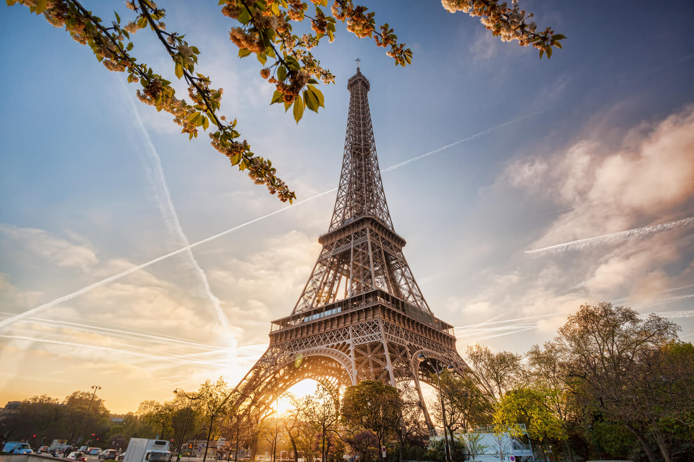

As lutas de gladiadores e simulações de caça com animais ferozes estão no imaginário de todos os que estudaram ou simplesmente assistiram filmes sobre o Império Romano.
O Coliseu, cujo nome oficial é Anfiteatro Flaviano, começou a ser construído em 72 d.C e demorou oito anos para ficar pronto. A construção, de concreto e areia, foi comandada pelo imperador Flávio Vespasiano – homenageado pelo filho Tito, que governava Roma quando as obras acabaram.
2. Torre Eiffel em Paris, França
Como não pensar na Torre Eiffel ao planejar uma ida à Europa? A construção de cerca de 300 metros de altura e dez mil toneladas que se tornou símbolo da capital francesa é capaz de dar um ar romântico a qualquer viagem.
A Torre Eiffel foi construída para a Exposição Universal de 1889, que celebrava os 100 anos da Revolução Francesa. Uma competição de design arquitetônico selecionou o projeto do engenheiro Gustave Eiffel, que projetou o monumento como arco de entrada da exposição, no Champ de Mars.

3. Museu do Louvre em Paris, França
Já do lado de fora impressiona o contraste da moderna pirâmide de vidro construída na década de 1980 com a fachada do palácio do fim do século XII, que abrigou chefes de estado franceses até 1870.
O Museu do Louvre é parada obrigatória para quem visita Paris, com suas coleções que remontam desde civilizações antigas até a arte ocidental da Idade Média.
Aproximar-se de obras famosas, como a inigualável Mona Lisa de Leonardo da Vinci, pode ser uma tarefa difícil devido ao grande número de visitantes, mas vale a pena ter persistência.